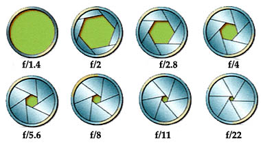

Historia de la fotografía
La Cámara
| Tipo | Característica |
|---|---|
| Compacta | Tamaño reducido, ligera y muy fácil de usar. Tiene un objetivo no intercambiable y un tamaño de sensor pequeño en comparación con las cámaras evil o réflex. |
| Réflex | El fotógrafo ve directamente la imagen que va a fotografiar a través de un visor óptico sin ninguna clase de error de paralaje. La luz entra en la cámara a través del objetivo, es reflejada en un espejo |
La exposición: abertura de diafragma y velocidad de obturación
Por qué unas imágenes consiguen un fondo desenfocado, o totalmente nítido, o bien cómo se consigue el poder hacer fotografías con poca luz y sin flash. Por ello, es recomendable practicar con los modos semiautomáticos.
La apertura de diafragma es la que regula la cantidad de luz que pasa por nuestro objetivo hacia el sensor de la cámara.
El diafragma forma parte de cualquier objetivo, y se compone de una serie de placas o aletas que se mueven hacia dentro o hacia fuera formando un círculo más o menos grande por el que pasa más o menos luz, dependiendo del diámetro del mismo.
Las diferentes aperturas de diafragma se miden o denominan a través de los números o valores en f/. Dependiendo de la luminosidad del objetivo, tendremos unos valores de f/ mínimos más pequeños o bien mayores.
Cuanto más bajo sea el valor f/, más luz entrará a través del objetivo, y cuanto más alto sea el valor f/, menos luz entrará a través del objetivo.
La escala de números f típica es la siguiente, aunque no muestra todas las posibilidades, ya que los diferentes pasos dependen del diseño del objetivo.
La velocidad de obturación, o tiempo de exposición, es uno de los tres pilares básicos de la exposición fotográfica (junto con la apertura de diafragma). Con el control de este parámetro se dejará pasar más o menos luz al sensor de nuestra cámara con una clara implicación: congelar o no el movimiento.
El obturador de nuestra cámara es un dispositivo mecánico muy preciso situado delante del sensor, que va a controlar el tiempo durante el cual le llegará la luz a éste. Está formado por dos cortinillas (una que se abre para iniciar la exposición y otra que se cierra para finalizarla), y el espacio que queda entre ellas será por el que entre la luz.
Por lo tanto, la velocidad de obturación será el tiempo que va a estar abierto el obturador de nuestra cámara y que dejará pasar la luz al sensor.
Selector de modos
Sensor de la imagen
El sensor es el corazón de nuestra cámara, la meta. Todo lo que hacemos para capturar una buena foto, desde el momento en que encuadramos hasta el momento del disparo, todo son acciones y pasos que persiguen un único fín: conducir la luz (la imagen) exterior hacia el sensor de la cámara.
El sensor como su nombre lo indica es un elemento “sensible” dentro de nuestra cámara, aquello sobre lo cual se proyecta la luz dibujando una imagen que representa lo que nuestra cámara ve.
El sensor es para las cámaras de fotos digitales como la película o carrete que usábamos en las cámaras de fotos analógicas.
Podemos “proyectar” sobre él tantas fotos digitales como queramos, pues para almacenar la foto ya tenemos la tarjeta de memoria.
Objetivos fotográficos
Distancia mínima de enfoque: Es la distancia, a partir de la cual, se puede enfocar. Si tratamos de hacer una fotografía por debajo de dicha distancia el objetivo no podrá enfocar y la imagen saldrá borrosa.
Apertura máxima de diafragma: Como vimos en el tema de apertura de diafragma, cada objetivo tiene una apertura máxima de diafragma.
Distancia focal mínima y máxima: O el grado de zoom que tiene. Un objetivo puede ser de focal fija o de focal variable (tipo zoom).
Estabilizador de imagen: El estabilizador de imagen es un sistema que reduce las vibraciones, evitando trepidación. Facilita que las fotos no salgan movidas y ayuda a obtener fotos más nítidas.
Enfoque: El sistema de autoenfoque varía en velocidad y precisión según la gama del objetivo. Los de alta gama tienen un autoenfoque mucho más rápido y permite enfocar en condiciones peores de luz.
No hay nada peor que la imagen nítida de un concepto difuso.- Ansel Adams